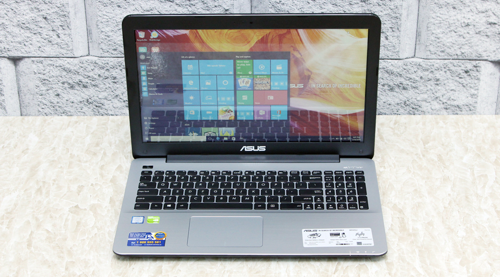

13.390.000 VND
Thông số kỹ thuật CPU: Intel, Core i5 Skylake, 6200U, 2.30 GHz RAM: DDR3L(On board+1Khe), 4 GB, 1600 MHz Đĩa cứng: HDD, 500 GB Màn hình rộng: 15.6 inch, HD (1366 x 768 pixels) Cảm ứng: Không Đồ họa: NVIDIA® GeForce® 920M, 2 GB Đĩa quang: DVD Super Multi Double Layer Webcam: 0.3 MP Chất liệu vỏ: Vỏ nhựa Cổng giao tiếp: 2 x USB 3.0, HDMI, LAN (RJ45), USB 2.0, VGA (D-Sub) Kết nối khác: Không PIN/Battery: 2 cell Li - Polymer Trọng lượng: (Kg) 2.3 Kg